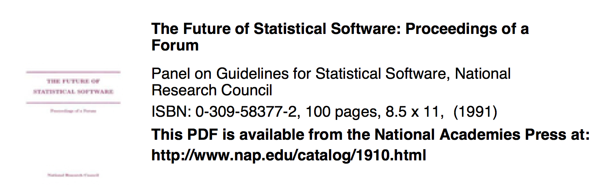

I have a quick question on your paper, A Bayesian hierarchical distributed lag model for estimating the time course of risk of hospitalization associated with particulate matter air pollution What is the degree of freedom did you give for the long-term and seasonal variation? and what is the justification? After reading your 2006 JRSS-A paper, I am still not sure about which method to choose to adjust for the long-term and seasonal variation. Can you tell me your preference?
Evidence-based Data Analysis
Roger D. Peng, Associate Professor of Biostatistics
Johns Hopkins Bloomberg School of Public Health
An Email from This Morning
Problem 1
You are given a vector of 200 numbers (continuous) that represent measurements that will eventually become an outcome in a regression model (i.e. a blood biomarker). You want to determine if the distribution of the set of numbers is right-skewed (i.e. possibly in need of transformation). Assume the data are uni-modal.
Describe a process to determine if the sample is skewed or not.
Problem 2
You have a sample of 300 observations on a continuous morbidity outcome \(Y\) and a predictor \(X\) that is continuous biomarker.
Describe a process to determine the magnitude of the linear association between \(X\) and \(Y\).
Problem 3
You have a sample of 750 observations of a continuous outcome \(Y\), an explanatory predictor \(X\) (continuous), and a third variable \(Z\) (binary).
Describe a process to determine if the relationship between \(X\) and \(Y\) changes across different levels of \(Z\) (i.e. is there an interaction between \(X\) and \(Z\)).
Problem 1: Data
Obtain the data from http://goo.gl/dkTfpE.
load(url("http://goo.gl/dkTfpE"))
str(x)
## num [1:200] 0.825 2.11 0.425 0.504 1.488 ...
Run your algorithm to determine if the data in x are skewed.
Problem 2: Data
Obtain the data from http://goo.gl/jrBE7G.
load(url("http://goo.gl/jrBE7G"))
head(x)
## y x
## [1,] 141 15.56
## [2,] 124 34.37
## [3,] 126 38.95
## [4,] 164 33.25
## [5,] 99 27.06
## [6,] 68 18.89
Run your algorithm to determine if x is linearly associated with
y.
Problem 3: Data
Obtain the data from http://goo.gl/efM6Jx.
load(url("http://goo.gl/efM6Jx"))
str(maacs)
## 'data.frame': 750 obs. of 3 variables:
## $ eno : num 141 124 126 164 99 68 41 50 12 30 ...
## $ pm25 : num 15.6 34.4 39 33.2 27.1 ...
## $ mopos: Factor w/ 2 levels "no","yes": 2 2 2 2 2 2 2 2 2 2 ...
Run your algorithm to determine if the relationship between eno and
pm25 changes across levels of mopos.
Problem 1 (Solutions)
Elizabeth Stuart: Make histogram; Do I care? If yes, Google test for skewness, run test.
Margaret Taub: Look at mean vs. median; make histogram, visually assess.
Ingo Ruczinski: Make histogram; visually assess.
Ani Eloyan: Make histogram with breaks = \(n/2\); make a Q-Q plot vs. Normal; run a test of Normality; if reject, run a skewness test (\(p < 0.05\)).
Scott Zeger: Calculate Tukey \(gh\) statistic; make a Q-Q plot
Elizabeth Colantuoni: Make a histogram; visually assess; Q-Q plot vs. \(t\)-distribution; bootstrap test of significance of quantiles
Betsy Ogburn: Do nothing (use robust methods subsequently)
John McGready: Histogram and a boxplot; visually assess.
Me: Run
agostino.test()in R and check if \(p < 0.05\).
Replication and Reproducibility
Replication
Focuses on the validity of the scientific claim
"Is this claim true?"
The ultimate standard for strengthening scientific evidence
New investigators, data, analytical methods, laboratories, instruments, etc.
Particularly important in studies that can impact broad policy or regulatory decisions
Replication and Reproducibility
Reproducibility
Focuses on the validity of the data analysis
"Can we trust this analysis?"
Arguably a minimum standard for any scientific study
New investigators, same data, same methods
Important when replication is impossible
Result of Data Revolution
Even basic analyses are difficult to describe
Heavy computational requirements are thrust upon people without adequate training in statistics and computing
Errors are more easily introduced into long analysis pipelines
Knowledge transfer is inhibited
Results are difficult to replicate or reproduce
Complicated analyses cannot be trusted
What Problem Does Reproducibility Solve?
What we get
- Transparency
- Data Availability
- Software / Methods Availability
- Improved Transfer of Knowledge
What Problem Does Reproducibility Solve?
What we get
- Transparency
- Data Availability
- Software / Methods Availability
- Improved Transfer of Knowledge
What we do NOT get
- Validity / Correctness of the analysis
What Problem Does Reproducibility Solve?
What we get
- Transparency
- Data Availability
- Software / Methods Availability
- Improved Transfer of Knowledge
What we do NOT get
- Validity / Correctness of the analysis
An analysis can be reproducible and still be wrong
We want to know “can we trust this analysis?”
Does requiring reproducibility deter bad analysis?
Problems with Reproducibility
The premise of reproducible research is that with data/code available, people can check each other and the whole system is self-correcting
Addresses the most “downstream” aspect of the research process – post-publication
Assumes everyone plays by the same rules and wants to achieve the same goals (i.e. scientific discovery)
An Analogy from Asthma

An Analogy from Asthma

An Analogy from Asthma

Scientific Dissemination Process

Scientific Dissemination Process

Scientific Dissemination Process

Scientific Dissemination Process

Scientific Dissemination Process

Who Reproduces Research?
For reproducibility to be effective as a means to check validity, someone needs to do something
- Re-run the analysis; check results match
- Check the code for bugs/errors
- Try alternate approaches; check sensitivity
The need for someone to do something is inherited from traditional notion of replication
Who is "someone" and what are their goals?
Why does this process need to be manual and post-publication?
Who Reproduces Research?

Who Reproduces Research?

Who Reproduces Research?

Who Reproduces Research?

The Story So Far
- Reproducibility brings transparency (wrt code+data) and increased transfer of knowledge
- A lot of discussion about how to get people to share data
- Key question of "can we trust this analysis?" is not addressed by reproducibility
- Reproducibility addresses potential problems long after they’ve occurred ("downstream")
- Secondary analyses are inevitably coloured by the interests/motivations of others
Evidence-based Data Analysis
- Most data analyses involve stringing together many different tools and methods
- Some methods may be standard for a given field, but others are often applied ad hoc
- We should apply thoroughly studied (via statistical research), mutually agreed upon methods to analyze data whenever possible
- There should be evidence to justify the application of a given method
- Hardware vs. software; Clinical trials vs. genomics
Future of Statistical Software

Building "Expert Systems"

"Nearly 10 years have passed since initial efforts to put statistical expertise into data analysis software were reported. It is fair to say that the ambitious goals articulated then have not yet been realized."
Incorporating Statistical Expertise into Software
"Accomplished statisticians argue that alternative model formulations, diagnostics, plots, and so on are necessary for a proper analysis of data. Inexperienced users of statistical software are overwhelmed. Initial efforts to incorporate statistical expertise into software were aimed at helping inexperienced users navigate through the statistical software jungle that had been created."
--Pregibon, 1991
Incorporating Statistical Expertise into Software
"Throughout American or even global industry, there is much advocacy of statistical process control and of understanding processes. Statisticians have a process they espouse but do not know anything about. It is the process of putting together many tiny pieces, the process called data analysis, and is not really understood. Encoding these pieces provides a platform from which to study this process that was invented to tell people what to do, and about which little is known."
--Pregibon, 1991
Evidence-based Data Analysis

hist(x)
Evidence-based Data Analysis

hist(x)
Evidence-based Data Analysis
- Create analytic pipelines from evidence-based components – standardize it
A Deterministic Statistical Machine http://goo.gl/Qvlhuv
Once an evidence-based analytic pipeline is established, we shouldn’t mess with it
Analysis with a “transparent box”
Reduce the "researcher degrees of freedom"
Analogous to a pre-specified clinical trial protocol
Deterministic Statistical Machine

Case Study: Estimating Acute Effects of Ambient Air Pollution Exposure
- Acute/short-term effects typically estimated via panel studies or time series studies
- Work originated in late 1970s early 1980s
- Key question: "Are short-term changes in pollution associated with short-term changes in a population health outcome?"
- Studies usually conducted at community level
- Long history of statistical research investigating proper methods of analysis
Data from New York City

Case Study: Estimating Acute Effects of Ambient Air Pollution Exposure
- Can we encode everything that we have found in statistical/epidemiological research into a single package?
- Time series studies do not have a huge range of variation; typically involves similar types of data and similar questions
- We can create a deterministic statistical machine for this area?
DSM Modules for Time Series Studies of Air Pollution and Health
Check for outliers, high leverage, overdispersion
Fill in missing data? NO!
Model selection: Estimate degrees of freedom to adjust for unmeasured confounders
- Other aspects of model not as critical
Multiple lag analysis
Sensitivity analysis wrt
- Unmeasured confounder adjustment
- Influential points
Summary
- Reproducible research is important, but does not necessarily solve the critical question of whether a data analysis is trustworthy
- Reproducible research focuses on the most "downstream" aspect of research dissemination
- Evidence-based data analysis would provide standardized, best practices for given scientific areas and questions
- Gives reviewers an important tool without dramatically increasing the burden on them
- More effort should be put into improving the quality of "upstream" aspects of scientific research